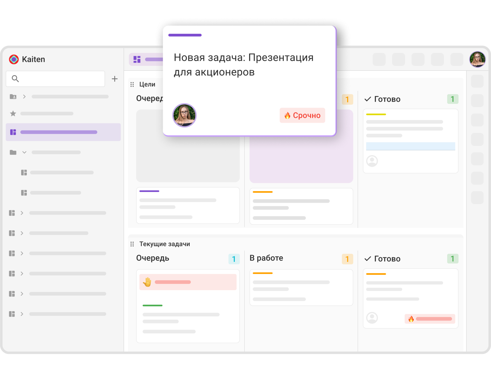

Экосистема в движении
Стратегия, эволюция и масштаб
Кайтен · план развития на 2026 год

Рыночный момент: кому мы помогаем расти
Доли отраслей в клиентской базе
разработка
и консалтинг
инструментов для управления задачами
и проектами в России
Ядро базы — ИТ и производство: команды, которым нужен
управляемый процесс, а не просто список задач
Оборудование, ритейл и финансы — остальная доля базы
Макроэкономика: силы, которые формируют наш рост
Окно возможностей
Импортозамещение
56% компаний ускоряют переход на российское программное обеспечение
Сдвиг парадигмы платформ
Рынок уходит от узкоспециализированных сервисов к единой операционной системе компании (WorkOS)
Спрос на ИИ
Компании ищут встроенных ИИ-помощников внутри рабочих инструментов, а не отдельно от них
Угрозы и барьеры
Давление конкурентов
Битрикс24 продвигает модель «все в одном» и активно занимает нишу
Инерция рынка
Команды привыкли к таблицам и мессенджерам, переход требует усилий
Давление на ИТ-бюджеты
Жесткая денежно-кредитная политика заставляет компании экономить
Что такое Кайтен на начало 2025 года
Один сервис вместо десятка других
Модульная архитектура: компания подключает только те модули, которыми пользуется, и платит за них.
Таск-менеджер
Канбан, скрам, автоматизации
Проекты
Ресурсное планирование, таймлайны
База знаний
Документы и корпоративная вики
Служба поддержки
Заявки, соглашение об уровне сервиса (SLA)
Таск-менеджер
Канбан- и скрам-доски
- Готовые шаблоны досок под канбан-метод и скрам-фреймворк
- Гибкая настройка колонок и дорожек
- Несколько досок на одном пространстве
- Иерархия задач: от целей до подзадач
Автоматизации
- Правила вида «если условие — то действие»
- Карточка не уйдет дальше без заполненного чек-листа
Учет времени и отчеты
- Учет времени по задачам и командам
- Канбан- и скрам-отчеты
- Анализ блокировок и узких мест
Ядро платформы: управление проектами и процессами
Зрелое ядро, на котором работают 100 000+ компаний
Планирование, доски, процессы и иерархия задач собраны в одном контуре — без стыковки нескольких сервисов.
Ресурсное планирование
и диаграммы Ганта
Гибкая настройка досок
канбан-метод и скрам-фреймворк
Автоматизация
визуальный конструктор процессов и контроль переходов
Иерархия задач
от целей бизнеса до подзадач
Выбор крупных компаний


Кайтен в реестре отечественного ПО, данные хранятся в России, доступна установка на серверы компании
База знаний: корпоративный мозг в едином месте
Совместная работа
- Редактирование в реальном времени
- Комментарии прямо внутри документов
- Упоминание коллег с мгновенными уведомлениями
Гибкое форматирование
- Колонки и раскрывающиеся блоки
- Цветовое кодирование
- Вложенные папки и публичная база знаний
Документы и задачи больше не живут в разных окнах
Контекст не теряется по дороге между сервисами
Что это меняет в работе
- Регламент открывается прямо из карточки задачи
- Задача заводится из документа в один клик
- Публичная база знаний для клиентов и партнеров
Служба поддержки: заявки и качество сервиса
Как идет заявка
Возможности
- Портал заявок: сайт, почта, Telegram
- Все данные заявки лежат в карточке
- Соглашение об уровне сервиса (SLA) и контроль сроков
- Автоматические уведомления заказчику
- Оценка работы поддержки после закрытия
Что сделано в 2025: трансформация в умную систему
Перестроен инфраструктурный фундамент
Таск-менеджер, база знаний, служба поддержки и проекты работают на общем ядре.
Запуск Кайтен ИИ
7 встроенных ИИ-агентов
Workflow
визуальный конструктор бизнес-процессов
Обновление документов
новый дизайн, колонки, совместное редактирование
Модули на общем ядре
задачи, знания, заявки, проекты
Workflow: рабочие процессы под контролем
Контроль процессов
- Контроль переходов между статусами
- Обязательные поля для перемещения карточек
- Условия для смены статуса
- Визуальный конструктор процессов
Для кого
Команды с регламентированными процессами: согласования, документооборот, производство, поддержка.
Процесс описан один раз — дальше система сама не пускает карточку дальше положенного.
Пример: согласование макета
Очередь
Доска с задачами
В работе
Назначен ответственный
Согласование
Обязательный чек-лист
Готово
Задача уходит в дизайн
Правки возвращают карточку в «Согласование»: без заполненного чек-листа переход дальше закрыт
7 ИИ-агентов, встроенных в каждый процесс
Транскрибация встреч
задачи заводятся прямо из созвона
Видеозапись экрана
заменяет часовые созвоны
ИИ-редактор в задачах
форматирует и уточняет описание
Голосовые комментарии
расшифровка прямо в контексте задачи
ИИ-редактор в документах
приводит текст к корпоративному стилю
Создание задач из браузера
без переключения окон
Deep Research
ответы по базе знаний за секунды
Агенты живут внутри процесса, а не в отдельном окне
Стратегическая финансовая цель 2027
Трехкратный рост
регулярной выручки (MRR) к текущим показателям
Фокус роста: малый и средний бизнес
увеличение с 19 до 65 млн ₽
Фокус роста: допродажа модулей
рост в основном за счет расширения существующей базы
Условие успеха: базовая ценность платформы и нулевое трение при подключении новых модулей
регулярной выручки в месяц
целевой MRR к 2027 году
Двигатель роста: удержание выручки и допродажа модулей
Допродажа работает только при четырех условиях
Стабильность платформы
Базовое ядро управления проектами работает без сбоев
Академия и обучение
Системное обучение снимает трение и ускоряет внедрение
Подтвержденная польза
Клиент получает измеримый результат от базовых функций
Допродажа модулей
Новые модули подключаются в уже установленный контур без затрат на привлечение
Что это дает
Выручка растет внутри действующей базы: клиент уже внедрен, обучен и получает пользу.
Где ломается
Если ядро работает нестабильно или внедрение затянулось, допродажа не стартует.
Стратегическая цель: от таск-трекера к операционной системе
Кайтен 1.0
Визуальная система управления
Задачи, проекты, документы и заявки на одном экране. Модульная архитектура и понятная цена подключения.
целевая регулярная выручка в месяц, трехкратный рост к 2027 году
- Работает сегодня
- Ядро платформы
Кайтен 2.0
Экосистема под управлением ИИ
Операционная система компании (WorkOS): процессы, коммуникации и аналитика в одном контуре, ИИ помогает на каждом шаге.
целевая EBITDA — прибыль до вычета процентов, налогов и амортизации
- Строим
- Горизонт 2027
Дорожная карта Кайтена на 2026 год
Публичный план развития, квартальный уровень
Q1 2026: в работе прямо сейчас
- В работе
- Q1 2026
CRM — базовый релиз
Воронки продаж на канбан-доске, карточки клиентов, аналитика и телефония внутри Кайтена. Сделки живут рядом с задачами команды.
- В работе
- Свой сервер
- Q2 2026
Серверные дополнения
Подключение дополнений в версии на своих серверах. Для компаний с изолированным контуром и требованиями к критической инфраструктуре.
- В работе
- Q3 2026
Набор для разработчиков 2.0
Больше возможностей для интеграций и расширений. Фундамент маркетплейса и открытая экосистема для партнеров.
- В работе
- Облако
- Q4 2026
ИИ-бот поддержки первой линии
Разбирает обращения в службе поддержки и отвечает на типовые запросы. Снимает нагрузку с первой линии.
- В работе
- Облако
- Q1 2026
База знаний: правки интерфейса
Улучшения интерфейса базы знаний по накопленным запросам пользователей.
- В работе
- Облако
- Q1 2026
Документы: редактор и связь с задачами
Размеры и наборы шрифтов, вкладки, спойлеры. Документ создается из карточки, задача — из документа.
Q2 2026: коммуникации и зрелость платформы
- В работе
- Q2 2026
Таск-трекер
Ключевые сценарии команд, которые приходят из Jira. Закрываем основные болевые точки при переносе процессов.
- В работе
- Q2 2026
CRM: умный поиск и автоматика
Быстрая обработка обращений и автоматические сценарии в воронке продаж.
- В работе
- Q2 2026
MCP-сервер, официальный релиз
Стандартный интерфейс для интеграций и ИИ-агентов. Открывает экосистему для внешних разработчиков.
- В работе
- Q2 2026
Поддержка: редизайн портала
Новый первый экран службы поддержки, обзорная страница с демо и отдельные Telegram-боты под каждый сервис.
- В работе
- Q2 2026
Поддержка: встраиваемый чат на сайте
Виджет чата прямо на сайте клиента — обращения падают в те же карточки, что и остальные каналы.
- В работе
- Q2 2026
Встроенные коммуникации
Чат, видеовстречи и командный календарь внутри Кайтена — рабочее обсуждение рядом с задачей.
Q3 2026: экосистема и аналитика
- В работе
- Q3 2026
Маркетплейс дополнений
Каталог, набор для разработчиков и партнерская экосистема вокруг платформы.
- В работе
- Q3 2026
Канбан-отчеты 2.0
Время цикла, пропускная способность и накопительная диаграмма потока для команд.
- В работе
- Q3 2026
Таймлайн и диаграмма Ганта 2.0
Планирование и зависимости на уровне портфеля проектов, а не отдельной доски.
- В работе
- Облако
- Q3 2026
Отчеты по проектам и ИИ-сводки
Управленческие сводки собираются быстрее, рутинной сборки отчетов становится меньше.
- В работе
- Q3 2026
Холст
Визуальная доска идей со связью с задачами: схема на холсте превращается в карточки.
- В работе
- Q3 2026
Календарь: синхронизация
Личные и рабочие календари собираются в одном месте внутри Кайтена.
Q4 2026: интеграции, аналитика и личный контур
- В работе
- Q4 2026
Экосистема интеграций
Каталог интеграций, партнеры и общая шина обмена данными.
- В работе
- Q4 2026
Управленческая аналитика (BI)
Единые показатели по компании и контроль исполнения на уровне руководства.
- В работе
- Q4 2026
Календарь: видеовстречи
Встречи создаются прямо из Кайтена, приглашения уходят по почте, календарь можно открыть по ссылке.
- В работе
- Q4 2026
Раздел «Личное»
Домашняя страница, личные списки задач и связь с личным календарем. Личное не видно администратору.
- В работе
- Q4 2026
Браузерное дополнение 2.0
Задача из любой вкладки уходит в раздел «Личное» в один клик.
К концу 2026 года рабочий день сотрудника целиком помещается в Кайтен
Один сервис вместо десятка других
Реализовано
Таск-менеджер
управление задачами, канбан, скрам
База знаний
документы и корпоративная вики
Workflow
контроль бизнес-процессов
Служба поддержки
работа с заявками, сервис-деск
Управление проектами
диаграмма Ганта, ресурсное планирование
Планы на 2026
CRM
управление продажами и воронкой
Корпоративный чат
рабочая переписка внутри платформы
Коммуникации
видеовстречи и командный календарь
Холст
визуальная совместная работа
Маркетплейс дополнений
каталог, набор для разработчиков, партнеры
профессиональный инструмент
для прозрачных процессов
Готовы ответить на все вопросы
50+ месяцев — столько в среднем с нами работают клиенты
Станьте партнером и зарабатывайте годами